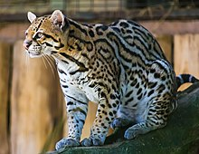

home
Felidae
Pantherinae
Ocelots
Leopardus Paradalis

Ocelots are a small member of the Felidae family, residing in forests. They have several defining characteristics, such as
- A rosette coat
- yellowish fur
- White belly
- Brown eyes
Ocelots' meal list include
- small birds
- fish
- rabbits and hares
- rodents
and more!
sources of information include
- Wikipedia
- International Society for Endangered Cats (ISEC) Canada